-> Beállítások -> Üdvözlőképernyő' pont alatt).
Majd nyissuk meg a 'Menü'-ben a Rendszerbeállítások - Vezérlőpult ablakot és állítsuk be az 'Asztal' tulajdonságait.
-> Beállítások -> Üdvözlőképernyő' pont alatt).
Majd nyissuk meg a 'Menü'-ben a Rendszerbeállítások - Vezérlőpult ablakot és állítsuk be az 'Asztal' tulajdonságait.
A Linux első indításakor (ha nem töröljük a 'Megjelenítés indításkor' jelölő négyzetet, akkor később is) megjelenik az 'Üdvözlő lépernyő' abkaka. Az 'Első lépések' fülön a telepítést folytathatjuk az adatmentési folyamat beállításával, a hardver eszközeihez tartozó illesztőprogramok kezelésével, továbbá multimédia kodekeket adhatunk a már meglévőkhöz. A frissítéskezelőben a rendszerhez kiadott legújabb javításokat és frissítéseket telepíthetjük, a rendszerbeállításokban testre szabhatjuk, egyedivé tehetjük linuxunkat, a szoftverkezelővel pedig új, előre nem telepített alkalmazásokatkat vehetünk használatba.
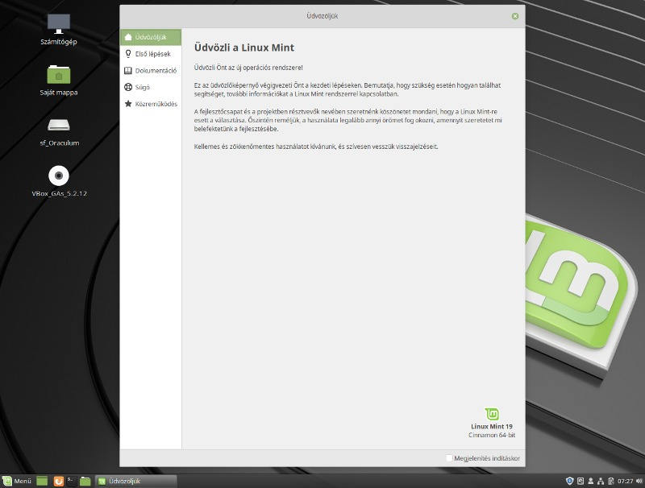 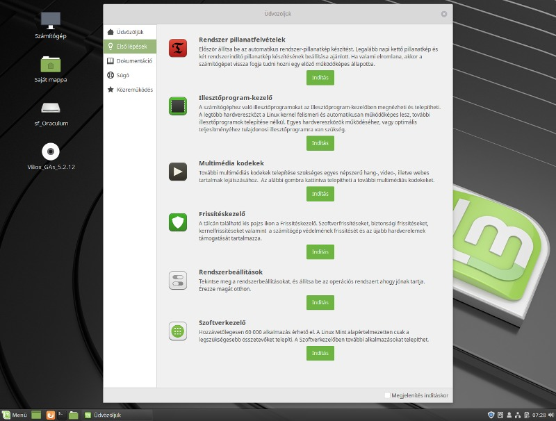
A 'Dokumentáció' és 'Súgó' fülek internetes oldalak címeit tartalmazzák, melyeken bő információ található az új operációs rendszerhez. Amennyiben támogatni szeretnénk a linux projekte, annak lehetőségeit 'Közreműködés' részben található linken találjuk meg.
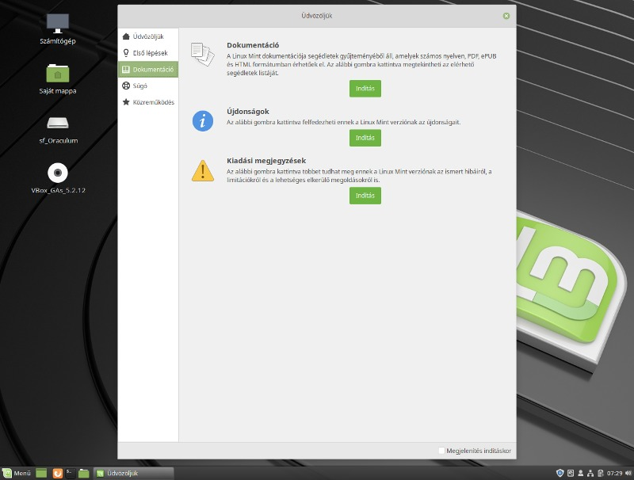 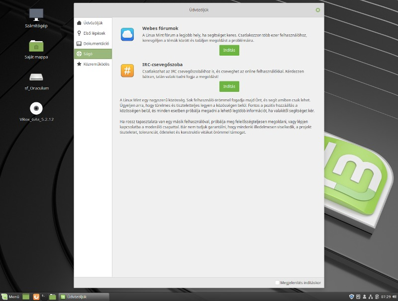
Zárjuk be az 'Üdvözlő képernyőt' (később megtalálhatjuk a
'Menü
-> Beállítások -> Üdvözlőképernyő' pont alatt).
Majd nyissuk meg a 'Menü'-ben a Rendszerbeállítások - Vezérlőpult ablakot és állítsuk be az 'Asztal' tulajdonságait.
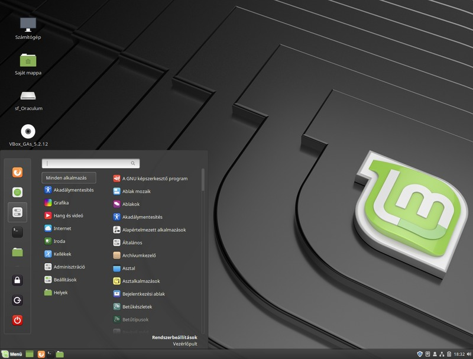 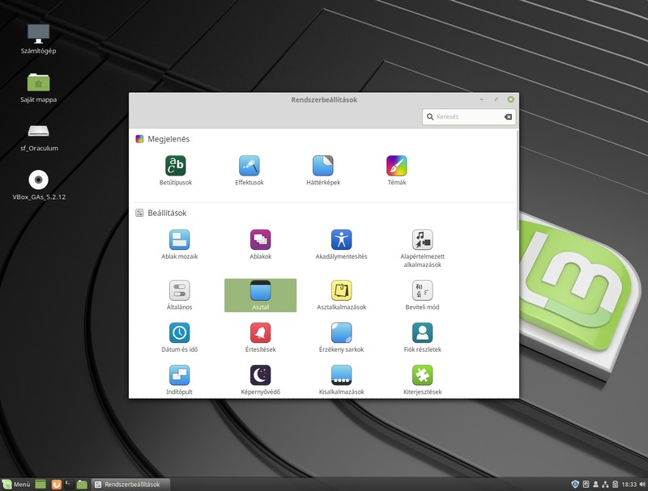
A kapcsolókkal az 'Asztal' alapértelmezett parancikonjainak a láthatóságát állíthatjuk be. Ezek a következők: 'Számítógép', 'Sakát mappa', 'Kuka', a csatolt kötetek mappái (ha vannak ilyemnek) és a Hálózat. Visszalépés után Kattintsunk a 'Háttérképek' ikonjára.
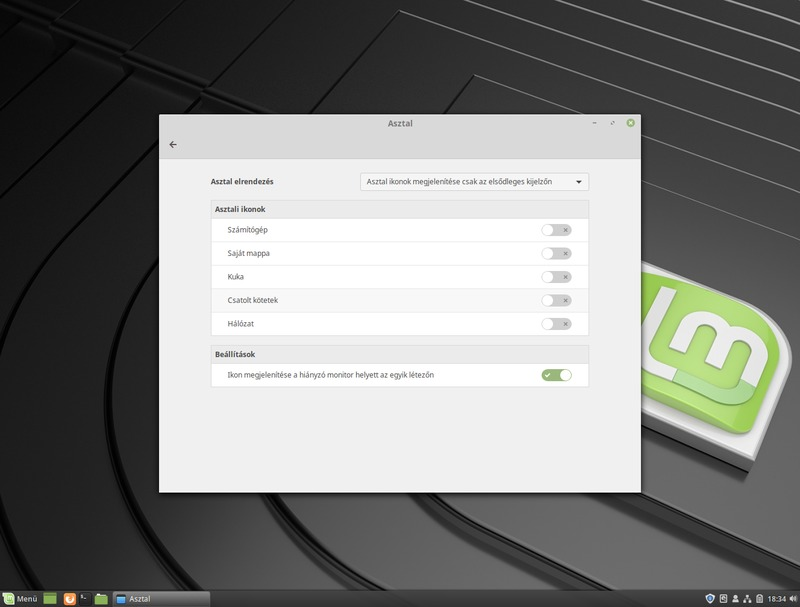 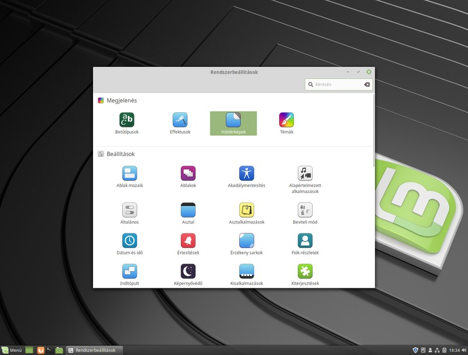
Majd állítsuk be ízlésünknek megfelelően a hátteret.
A példákban alkalmazott szürke háttér innen tölthető le.
Fontos kezdeti lépés még a képernyővédő beállítása.
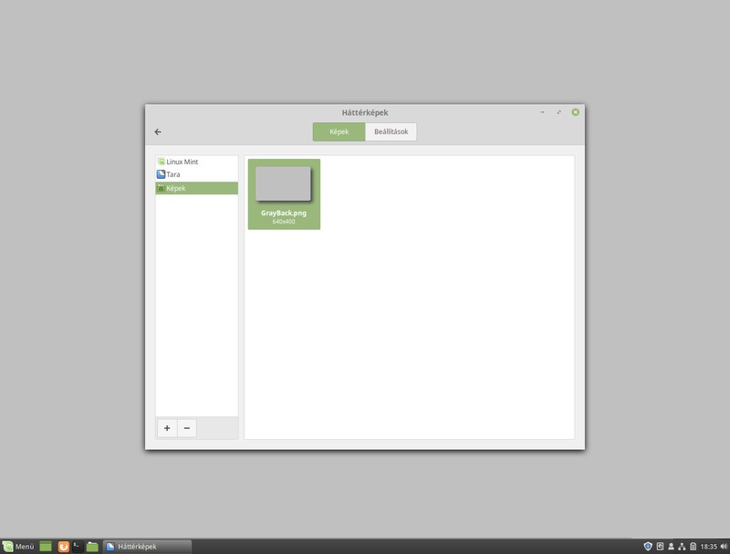 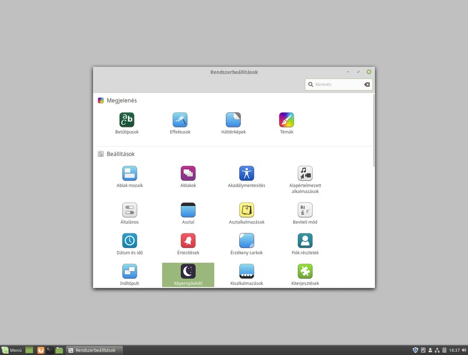
Eldönthetjük, hogy mennyi idő után kapcsoljon be a képernyővédő és ki is választhatjuk kedvencünket. A középső 'Beállítás' fülön szabályozhatjuk, hogy a rendszer jelszót kérjen a képernyővédő elhagyása és munkához történő visszatérésekor.
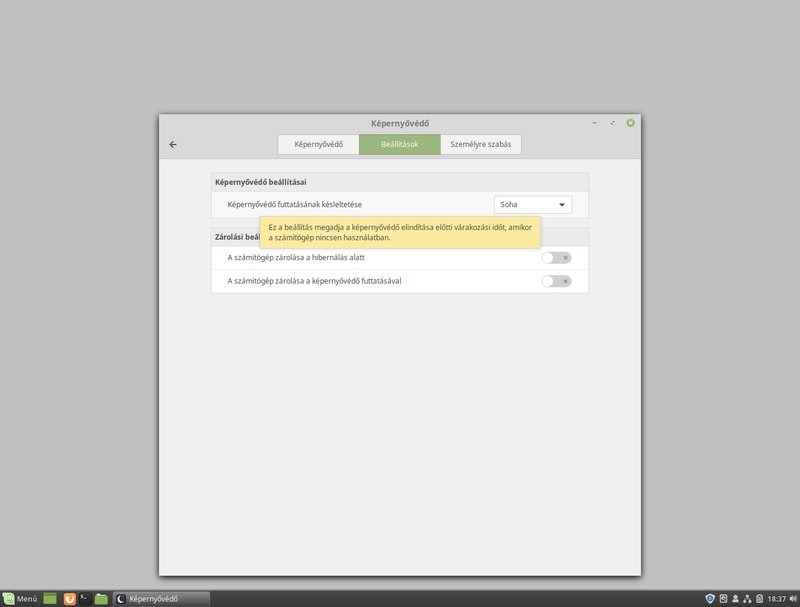 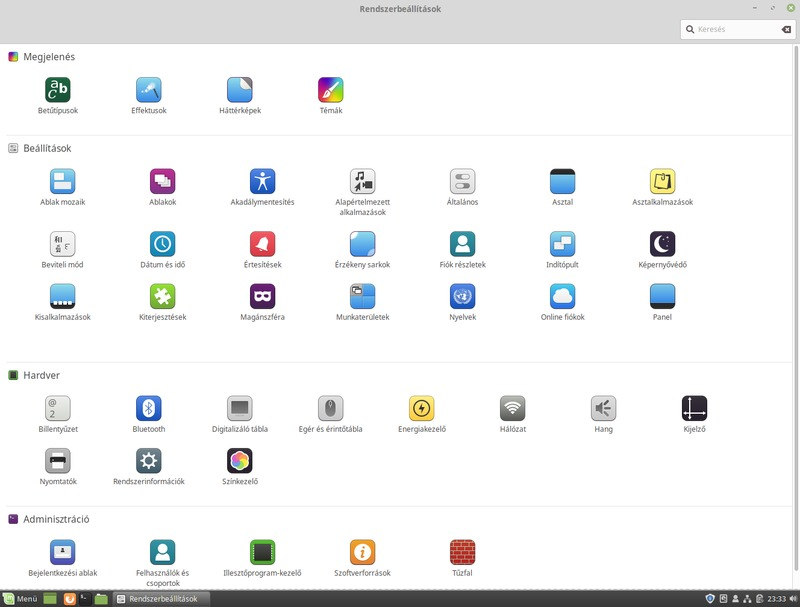
A biztonságos munka érdekében javasolt a jelszavak kérésének a beállítása. Az egyedi asztalkép kialakítása pedig mindenkinek a szíve joga.
{kind=link}